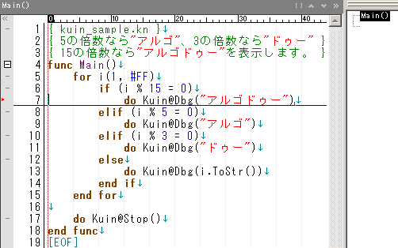
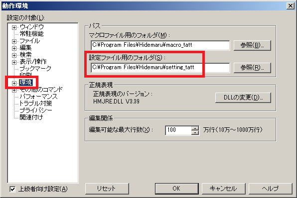
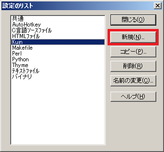
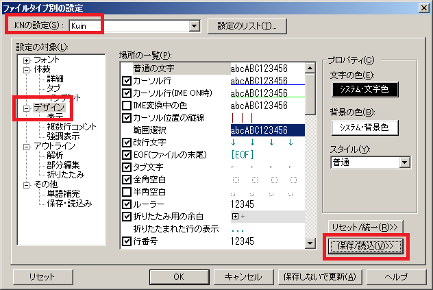

kuin.hilight (Kuin用 秀丸設定ファイル)
シンタックスハイライト定義ファイル
Last Modified: 2012/09/17 10:35:40.
日本語(Japanese), English
概要
kuin.hilightは、Kuin用の秀丸設定ファイルです。
自作言語Kuin 言語仕様Ver.0.01 @ Tes.Soを参考に作成しました。
※Kuinは、くいなちゃん(@kuina_tesso)が考案したプログラミング言語です。
|
【使用イメージ】  |
ダウンロード
【自己責任でご利用下さい】
2012/08/04 作成・公開
kuin.hilight
使用方法
- ダウンロードした kuin.hilight を設定ファイル用のフォルダに置いてください。
※「設定ファイル用のフォルダ」は[その他]-[動作環境]の[環境]で確認できます。
 - [その他]-[ファイルタイプ別の設定]で、[設定のリスト]をクリックしてください。
- [新規]でKuinを追加します。
 - ～.knファイルを開いている状態で、[その他]-[ファイルタイプ別の設定]の[.KNの設定]で[Kuin]を選択します。
- [デザイン]タブで[保存/読み込み]-[読み込み]を選択し、[全てオン]にし、[Kuin.hilight]を選択して[OK]

その他
Kuin関連ページの紹介
Copyright (C) Tatt(タット) ---- Twitterアカウント @tatt61880